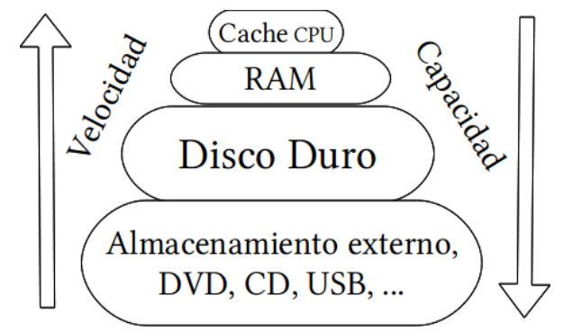
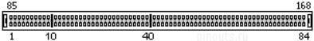
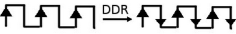
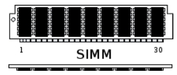
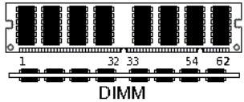
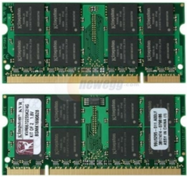
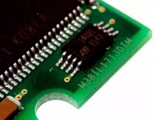

Memoria RAM#
La RAM (Random Acces Memory = Memoria de acceso aleatorio) es una memoria de trabajo, cuando ejecutamos un programa, se pasa una copia a la memoria RAM, después las instrucciones que componen el programa pasan a la CPU; sin embargo, los contenidos se eliminan al apagarse o reiniciarse el ordenador, a diferencia de los dispositivos de almacenamiento masivo como los discos duros, que mantienen la información de manera segura, incluso cuando el ordenador se encuentra apagado.
{kind=link}
La RAM es extremadamente rápida a comparación de los dispositivos de almacenamiento masivo como los discos duros.
En la actualidad, encontramos en el mercado procesadores de gama media y alta que trabajan con memoria DDR4, es decir cuando vas a comprar un modulo de memoria DDR4, es muy probable que estés comprando un modulo DDR4 DIMM SDRAM, vamos a entender que significa esto:
{kind=link}
DRAM :(Dynamic Random Access Memory): Es el tipo más común de RAM y se utiliza en la mayoría de las computadoras. La DRAM se actualiza constantemente, lo que significa que debe ser alimentada con electricidad para mantener los datos almacenados.
SRAM : (Static Random Access Memory): La SRAM es más rápida que la DRAM, pero también es más costosa y consume más energía. Se utiliza en aplicaciones que requieren un acceso rápido a la memoria, como los cachés de CPU.
SDRAM (Synchronous Dynamic Random Access Memory) La SDRAM sincroniza su reloj con el bus del sistema para permitir un acceso más rápido a la memoria. Se utiliza en computadoras de escritorio y servidores.
DDR-SDRAM (Doble data rate SDRAM) SDRAM de doble velocidad, la SDRAM «normal» trabajaba solo con las fases de subida de la señal de reloj, sin embargo la DDR-SDRAM utiliza los flancos de subida y de bajada.
DDR2 ~533-800 Mhz, 1.8V y T ~ 4-6 GB/s
DDR3 ~1066-1866 Mhz, 1.5V ~ 10-14 GB/s
DDR4 ~2133-3200 Mhz, 1.2V ~ 17-25 GB/s
Ejemplo de cálculo DDR4 2933MHz, (1466.67 X 2) X 8 (cantidad de bytes de ancho) X 4 (cantidad de canales) = ancho de banda de 93 866.88 MB/s, o 94 GB/s.
Por su forma física los módulos de RAM los podemos clasificar en:
SIMM (Single Memory Module)
DIMM (Dual Inline Memory Module)
SO-DIMM usado en portátiles, es un formato reducido del DIMM
Otras características
Dual chanel Incrementa el rendimiento de estas al permitir el acceso simultáneo a dos módulos distintos de memoria, tienen que ser dos módulos exactamente iguales DDR, DDR2, DDR3… además la placa base tiene que soportarlo., es decir tiene que tener un segundo controlador de memoria. Las placas base de consumo general soportan configuraciones de doble canal, pero en las versiones para equipos profesionales podemos encontrar soporte de cuádruple, séxtuple y hasta óctuple canal. El doble canal marca una gran diferencia en equipos con GPUs integradas, ya que estas recurren a la memoria RAM y utilizan una parte de ella como memoria VRAM (la VRAM es a la GPU lo que la RAM a la CPU)
LPDDR (abreviatura de Low-Power Double Data Rate), también conocida como Low-Power DDR SDRAM o LPDDR SDRAM, es un tipo de memoria de acceso aleatorio dinámico síncrona de doble velocidad de datos que consume menos energía y está destinada a dispositivos móviles. También se conoce como Mobile DDR y se abrevia como mDDR.
XMP , o eXtreme Memory Profile es una característica de la memoria RAM de ordenador que permite a los usuarios configurar y ajustar la velocidad y otras opciones avanzadas de la memoria de forma sencilla
SPD, Serial Presence Detect, es una característica de la memoria RAM de ordenador que permite a la placa base detectar y leer información sobre la memoria instalada en el sistema. La información incluida en el SPD típicamente incluye la marca y modelo de la memoria, su capacidad, su frecuencia y otros ajustes técnicos.
EEPROM, o Electrically Erasable Programmable Read-Only Memory, es un tipo de memoria no volátil que se utiliza en ordenadores y otros dispositivos electrónicos para almacenar datos que pueden ser borrados y reescritos electrónicamente. La memoria EEPROM se utiliza a menudo para almacenar información que necesita ser modificada con regularidad, como la configuración del sistema o la información de usuario, y es más rápida y fácil de actualizar que otros tipos de memoria no volátil, como la memoria ROM o la memoria flash. La memoria EEPROM se diferencia de la memoria RAM en que los datos almacenados en EEPROM no se pierden cuando se apaga el dispositivo, mientras que los datos almacenados en RAM sí se pierden.
Tiempo de Latencia se refiere al tiempo que transcurre desde que un dispositivo envía una solicitud de acceso a una determinada pieza de información hasta que recibe una respuesta.
{kind=link}
{kind=link}
{kind=link}
{kind=link}
{kind=link}
{kind=link}
{kind=link}